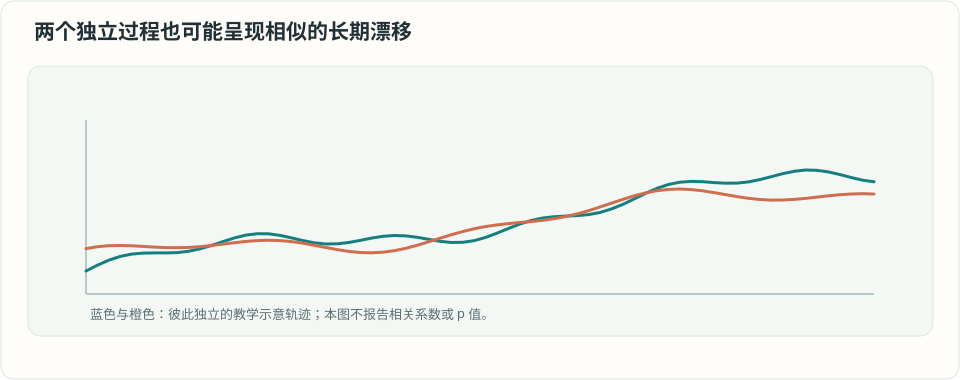
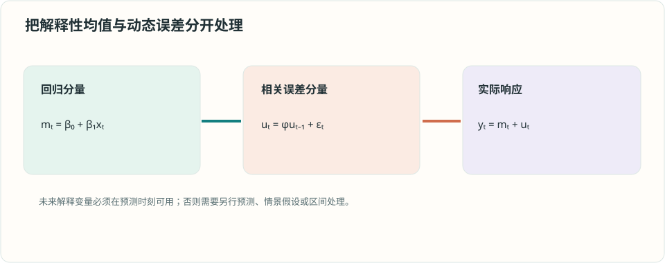

CHAPTER 06 / 28 · STATISTICAL MODELLING
时间序列回归：解释、相关误差与伪回归
回归系数有意义，需要怎样的统计假设？从 OLS 的均值结构，到自相关误差、Durbin–Watson / Breusch–Godfrey、HAC 与动态回归。
某家门店销售量随气温上涨而增加。一个普通回归可以描述这种关系，但如果连续热天让相邻日销量一起偏高，回归残差可能也带有时间结构。此时回归可以仍是有用的预测工具，但对系数的标准误、预测区间和因果解释都必须重新检查。
这一章将三个问题严格分开：解释变量能说明多少条件均值？剩余误差是否具有自相关？系数与预测是否可作为因果效应或未来信息使用？
01 · 线性回归模型在时间维度上怎样解释
回归模型把响应分成可由解释变量描述的部分和未解释误差。符号中 t 是观察时点，xₜ 可以是温度、折扣、节假日虚拟变量、趋势变量等。在真实预测时，每个 xₜ 必须是当时确实可得的特征。
OLS 最小化观测残差平方和。若解释变量严格外生等条件成立，即使误差存在自相关，OLS 也不必然有偏，但常规独立同分布标准误和传统 t 检验往往不再可靠。若解释变量与误差相关或存在反馈，问题会更严重，需要更合适的动态规格或识别策略。
02 · 独立随机游走为什么会产生伪回归
两个互相独立的 I(1) 随机游走，即使真实生成冲击没有任何关联，在有限样本中也可能恰好共同上升或下降。把它们的水平直接回归，常规平稳回归的渐近分布论证失效，高 R² 或看似显著的系数可能误导。

| 场景 | 风险 | 更合适的检查 |
|---|---|---|
| 共同确定性趋势 | 遗漏时间结构导致残差关联 | 显式趋势、季节或变点 |
| 独立的单位根随机游走 | 水平回归的非标准推断 | 单位根和协整检查，合理差分 |
| 存在协整的 I(1) 序列 | 盲目差分可能丢失长期均衡 | 协整 / 误差修正框架 |
| 真实反馈或遗漏变量 | 相关并不等于因果 | 设计、外生性与识别假设 |
“所有非平稳序列都不能回归”同样错误。如果多个 I(1) 序列协整，其稳定线性组合可能支持长期关系；对应推断仍须使用协整相关方法，不能复用普通 OLS 的一切结论。
03 · Durbin–Watson 测量了什么
Durbin–Watson（DW）统计量比较相邻残差的差值平方与残差本身平方。正的一级自相关通常把统计量推向 0；无一级相关时，统计量常接近 2；负相关通常把它推向 4。
DW 不是“靠近 2 就一定通过”的万能判定。若回归中包含因变量的滞后项，经典 DW 检验假设可能不适用；对于更一般的滞后相关，Breusch–Godfrey（BG） 的辅助回归方法更灵活，也可以检查多个滞后。
04 · 相关误差该怎样修正：HAC、GLS 或动态模型
三类工具解决的问题不同。HAC（Newey–West 型）稳健协方差主要调整推断所用的方差估计，不改变 OLS 点估计，也不能自动修复内生性或让预测更准确。GLS/GLSAR 用显式误差协方差结构重新加权估计；动态回归则可以把 ARIMA 误差过程纳入同一个预测模型。
| 方法 | 它改变什么 | 必须认识的局限 |
|---|---|---|
| HAC / Newey–West | 系数的稳健协方差及标准误 | 带宽与数据条件重要；不修复内生性 |
| Cochrane–Orcutt / Prais–Winsten | 假设 AR(1) 误差、进行可行 GLS 变换 | 误差规格错会导致低效或偏误；两种方法对首期处理不同 |
| 回归 + ARIMA 误差 | 联合建模回归均值与剩余序列依赖 | 未来外生变量需要已知或预测 |
| 更合理的特征与滞后 | 改善均值规格和遗漏结构 | 注意泄漏及样本外稳定性 |

05 · 回归怎样加入时间趋势与季节性
对于月度业务数据，可加入 11 个虚拟变量来表示相对基准月份的均值偏移，或者用正余弦 Fourier 项描述光滑、重复的季节模式。如果包含截距又加入 12 个互斥月度哑变量，会产生完全共线性（dummy-variable trap），必须去掉一个基准水平或调整参数化。
有确定性趋势并不等于有单位根；一条随时间上升的条件均值可以通过显式趋势回归建模。对不规则日期、变点与节假日，应设计独立的外生特征；对相邻残差中的自相关，还需单独诊断。
06 · Python：比较普通与 HAC 标准误，诊断残差
下面生成含 AR(1) 误差的合成回归数据，展示 DW/BG 检验与 HAC 标准误。真实数值受固定随机种子的某一次样本影响，代码仅断言基本结构，不把 p 值写成预先必然的结果。
import numpy as np
import statsmodels.api as sm
from statsmodels.stats.stattools import durbin_watson
from statsmodels.stats.diagnostic import acorr_breusch_godfrey
rng = np.random.default_rng(2026)
n = 240
x = rng.normal(size=n)
u = np.zeros(n)
for t in range(1, n):
u[t] = 0.7*u[t-1] + rng.normal(scale=0.8)
y = 4 + 1.5*x + u
X = sm.add_constant(x)
ols = sm.OLS(y, X).fit()
hac = ols.get_robustcov_results(cov_type="HAC", maxlags=8)
print("OLS beta:", ols.params[1], "OLS SE:", ols.bse[1])
print("HAC beta:", hac.params[1], "HAC SE:", hac.bse[1])
print("DW:", durbin_watson(ols.resid))
print("BG p:", acorr_breusch_godfrey(ols, nlags=4)[1])
assert np.allclose(ols.params, hac.params)HAC 并不是将时间依赖“从残差中消除”。示例中的 x 独立于误差；如果改为由过去 y 或未观察冲击决定的自变量，应重新讨论严格外生性，不能指望 HAC 自动纠正参数。
07 · 改变残差记忆系数，观察理论相关衰减
对于平稳 AR(1) 误差 uₜ=ρuₜ₋₁+εₜ，滞后 k 的理论相关为 ρᵏ。同样的回归系数，残差结构可以显著不同，因而需要不同的误差建模或标准误处理。
交互图为明确假设下的理论或合成演示，不表示对任何真实数据的参数估计。
注意这不是让回归斜率变为因果效应的旋钮。它只改变合成误差的理论相关结构。
08 · 用于真实项目的审查顺序
- 明确预测目标、未来外生变量何时可得，以及系数是否用于因果解释。
- 检查解释变量的时间对齐、遗漏趋势、季节与结构断点。
- 观察原始响应及 OLS 残差，结合 DW/BG 与残差 ACF，不仅看 p 值。
- 为推断选择合适的误差协方差处理；为预测检验动态误差规格是否有样本外增益。
- 使用相同的前向切分，将预测与季节朴素或其他简单基线比较。
定义与实现的核对来源
这些资料用于核对数学条件、参数含义及接口。图示与实验为独立编写的教学材料，不代表外部论文或真实业务效果。